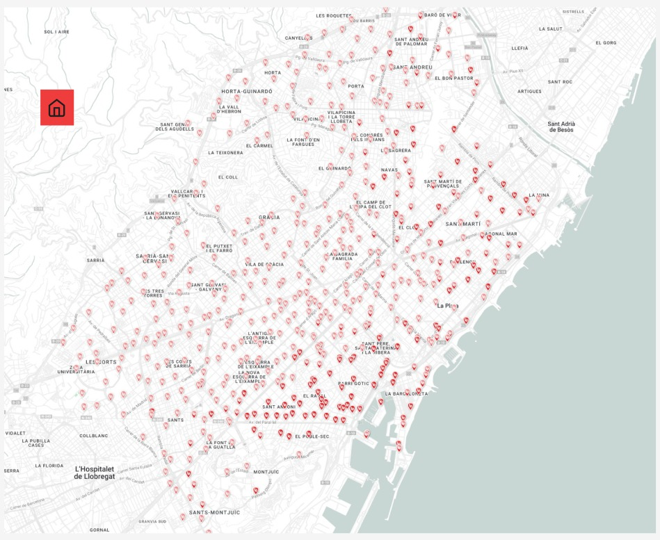
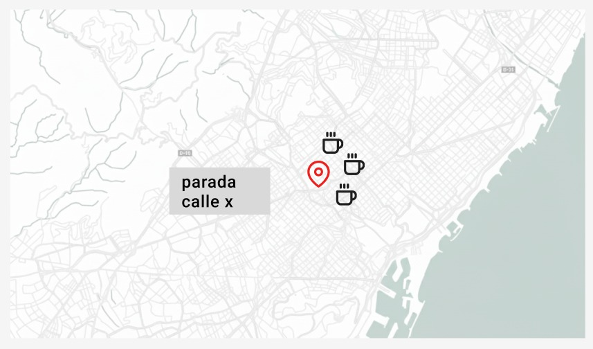
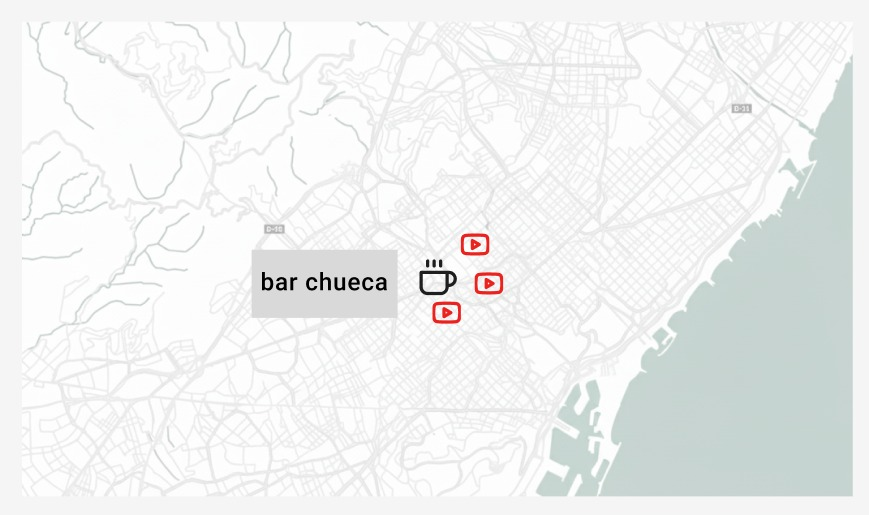
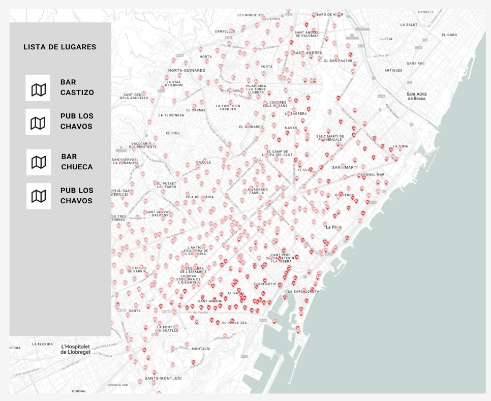

Application Requirements: "BCN Urban Connect"
1. General Application Description
BCN Urban Connect is a minimalist web application designed to help users find leisure spots (bars) and mobility points (Bicing stations) in Barcelona. The app's main goal is to answer two simple questions: "What are the nearest bars to this Bicing station?" and "What are the nearest Bicing stations to this bar?". It provides a clean, map-based interface for intuitive urban navigation and planning.
2. Functional Requirements (What the app will do)
- FR-01: The application will display all Bicing stations and all selected bars on an interactive map, using distinct icons for each location type.
- FR-02: When a user clicks on a Bicing station icon, the map will update to show only that station and the 5 nearest bars to it.
- FR-03: When a user clicks on a bar icon, the map will update to show only that bar and the 3 nearest Bicing stations to it.
- FR-04: The user can click on a bar icon (in any view) to see a pop-up with detailed information, such as its name, address, and type.
- FR-05: The application will provide a "Reset View" button to return the map to its initial state.
3. Non-Functional Requirements (How the app will be)
- NFR-01 (Performance): The initial map should load in under 5 seconds. Filtering actions should feel instantaneous (under 1 second).
- NFR-02 (Usability): The interface will be minimalist and intuitive, with easily distinguishable icons.
4. Mock-ups (Interface Wireframes)
Mock-up 1: Initial View
This wireframe shows the main web interface on startup. The map displays all locations with two different icons for Bicing stations and bars.

Mock-up 2: Bicing Station Selected
This view shows the result of clicking on a Bicing station. Only the selected station and its nearest bars are visible, visually linking mobility with leisure.

Mock-up 3: Bar Selected
This view shows the result of clicking on a bar. The map now only displays the selected bar and the closest Bicing stations, helping users plan their transportation.

Mock-up 4: Venue Detail View
This mock-up shows the detailed information pop-up that appears when a user clicks on a specific bar, displaying its name, address, and category.
